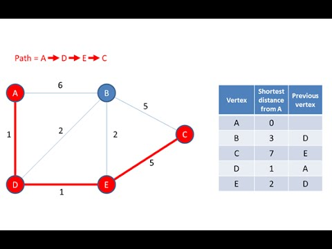
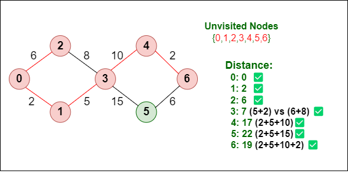
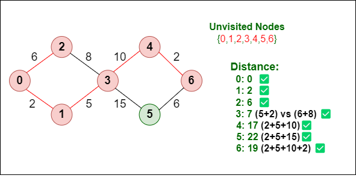
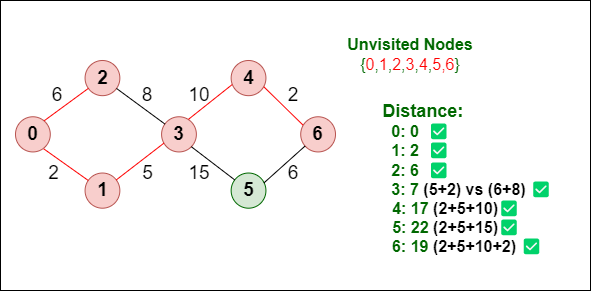

What is Dijkstra's Algorithm?
Dijkstra's algorithm is a popular graph search algorithm used to find the shortest path between nodes in a graph. It works by selecting the node with the smallest known distance from the start node, updating the distances of its neighbors, and repeating the process until all nodes have been visited. The algorithm is widely used in network routing, navigation systems, and many other fields where finding the shortest path is essential.
Where is Dijkstra's Algorithm Used?
Dijkstra's algorithm has various real-world applications, including:
- GPS Navigation: Finding the shortest route between two locations on a map.
- Network Routing: Determining the optimal path for data packets to travel across a network.
- Video Games: Guiding characters or objects along the shortest path to a target location.
- Logistics and Supply Chain: Optimizing delivery routes for transportation and shipping.
- Robotics: Helping robots navigate efficiently in dynamic environments.
Examples of Dijkstra's Algorithm

 

